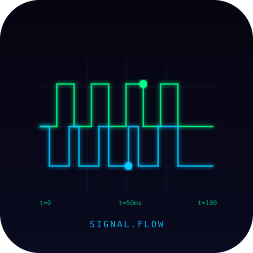
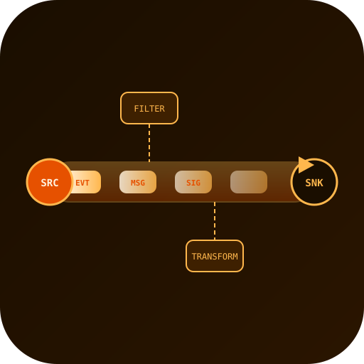
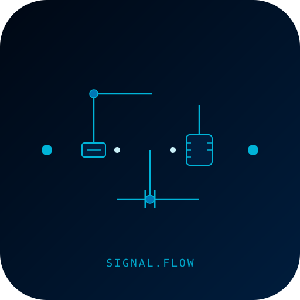
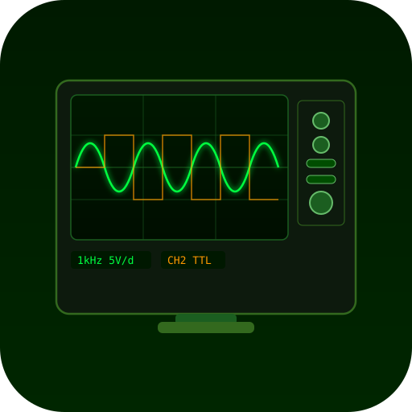
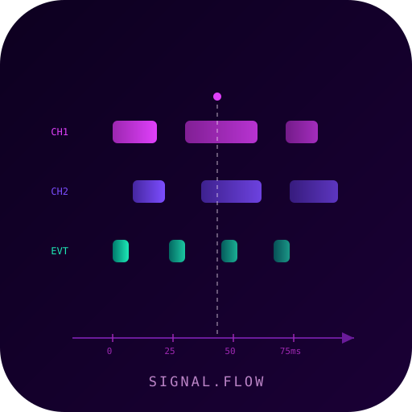
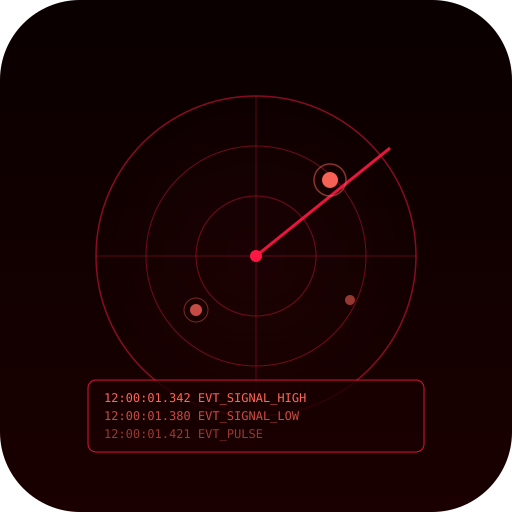
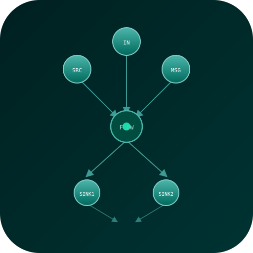
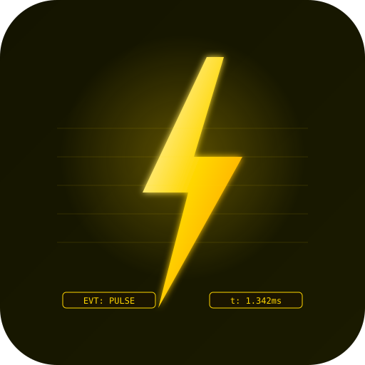
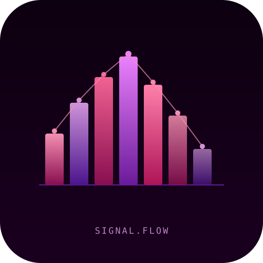
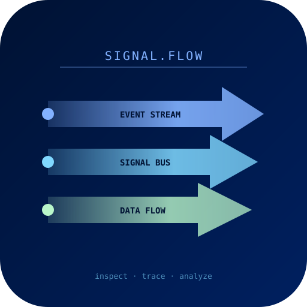

신호·이벤트 흐름 분석기 — 아이콘 후보 10종

01 · neon waveform
02 · orange event pipe
03 · blue circuit trace
04 · green oscilloscope
05 · violet event timeline
06 · red pulse radar
07 · teal DAG flow
08 · yellow lightning debug
09 · pink spectrum analyzer
10 · ice stream arrows